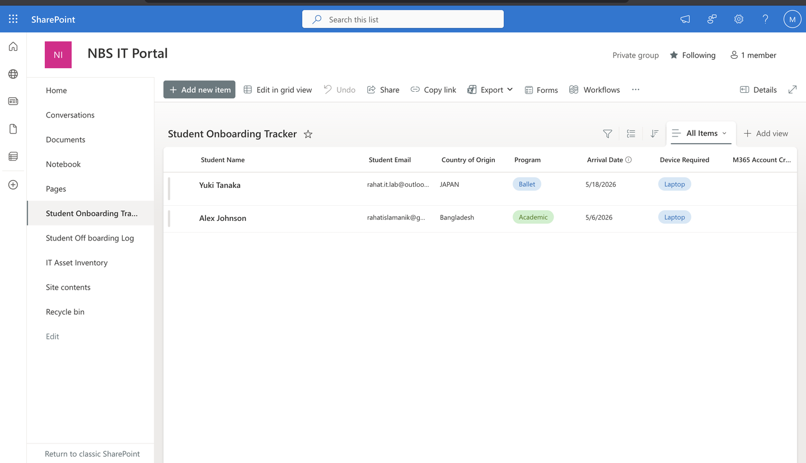
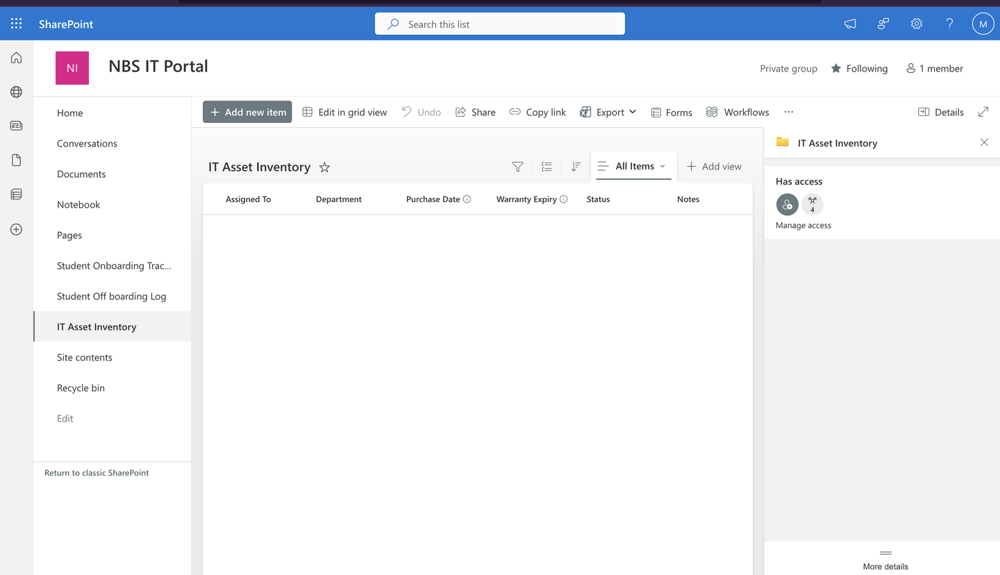
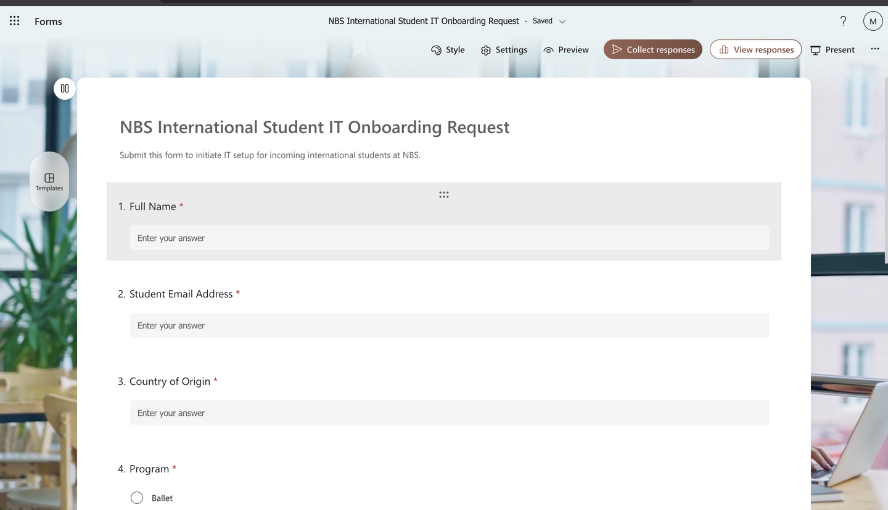
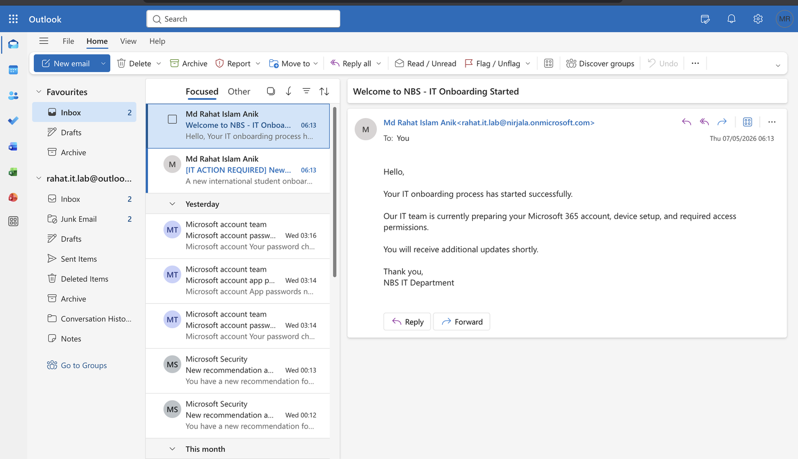
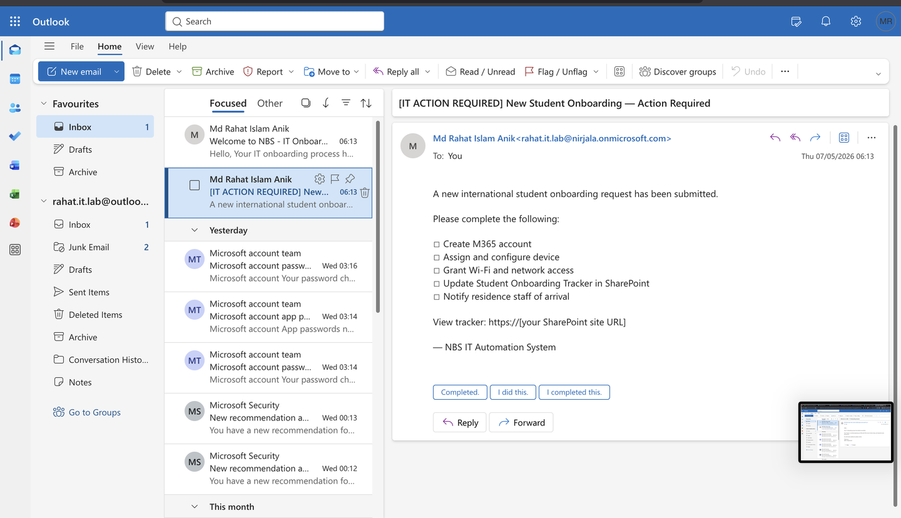
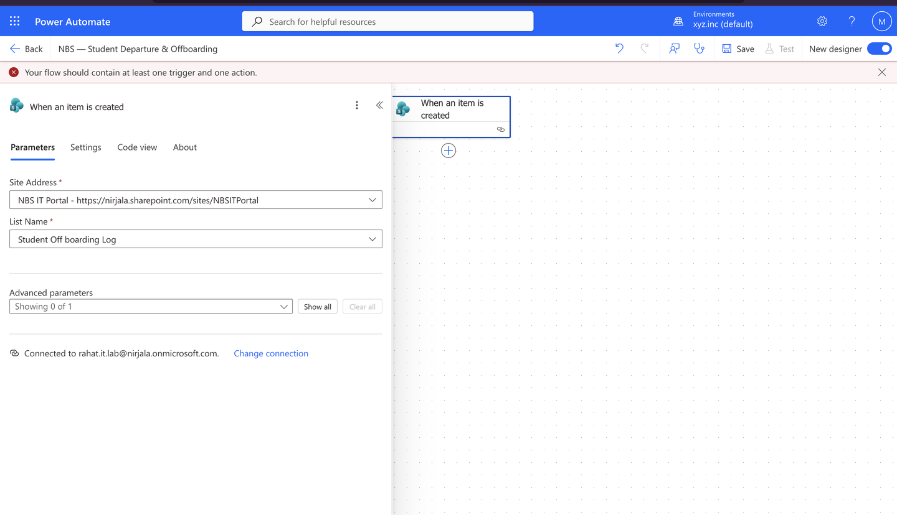
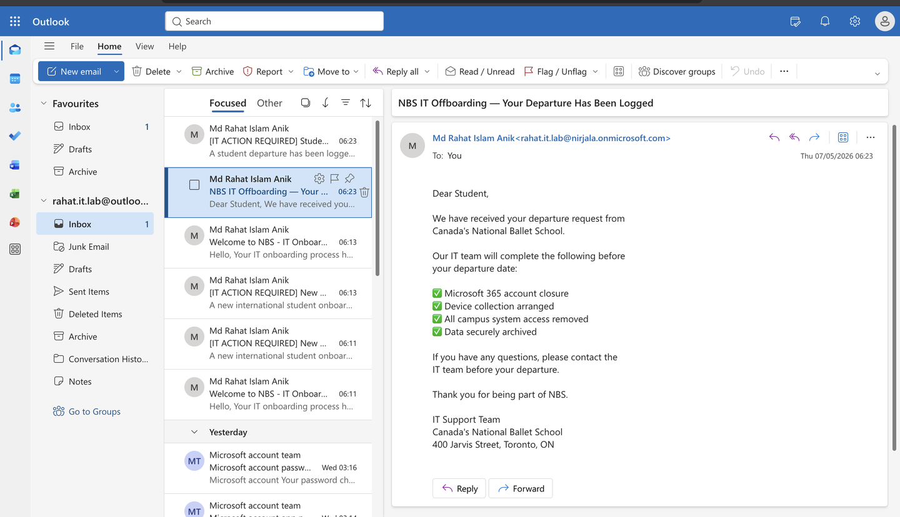
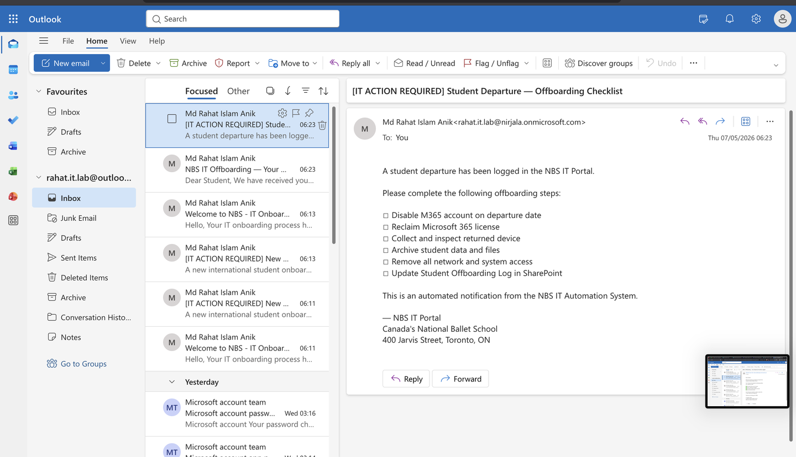

A self-directed Microsoft 365 automation case study for international student onboarding and offboarding, built with SharePoint, Forms, Power Automate, and Outlook.
The Challenge
Project Arabesque is based on a performing-arts school scenario with international boarding students, academic staff, residence coordination, and a small IT team. Each student needs a Microsoft 365 account, a configured device assignment record, network access coordination, and clear onboarding communication.
300+ staff, students, visiting choreographers, and international partners — all supported by a small IT team. Manual onboarding doesn't scale without breaking something important.
This isn't a tech company. When something breaks the morning of a performance, or a student arrives and their account isn't ready, it matters in a way that a missed meeting notification never does.
The solution shouldn't require a $40,000 enterprise platform or a vendor contract when the workflow can be covered with existing Microsoft 365 services.
Students arrive from Japan, Brazil, South Korea, the UK — different time zones, language needs, arrival dates. The onboarding process needs to reduce manual coordination and keep the IT team working from one source of truth.
The Solution
Project Arabesque is a Microsoft 365 IT Operations Hub built around SharePoint Online, Microsoft Forms, Power Automate, and Office 365 Outlook. It demonstrates intake, tracking, email notifications, and device assignment records without adding a separate ticketing or onboarding platform.
SharePoint lists, intake form, cloud flows, and email notifications are shown with sample workflow data. This is a portfolio case study, not a production deployment claim.
Device assignment is tracked in SharePoint. The project does not claim physical device enrollment, Intune compliance validation, or automated Entra ID account creation.
Phase 1 — Foundation
Three SharePoint lists form the operational backbone — an onboarding tracker, an offboarding log, and a device asset inventory. Every student, every request, every device assignment: one portal.


Phase 2 — Automation






Business Impact
Every manual onboarding can take an IT team member approximately 45 minutes end-to-end. Every offboarding, around 30 minutes. With 20–30 international students per semester, the model shows meaningful time savings and fewer missed handoff steps.
Technical Stack
No new vendors. No new licenses. Every component of Project Arabesque is modeled with Microsoft 365 services that many education organizations already administer.
Why This Matters
"A ballet dancer shouldn't have to think about the network when she's streaming a rehearsal recording. A choreographer shouldn't have to think about SharePoint when he's pulling up production notes. The IT process should be quiet, predictable, and documented. That's what Project Arabesque is designed to model."
Md Rahat Islam Anik
Microsoft 365 · IT Automation · Support Operations Portfolio